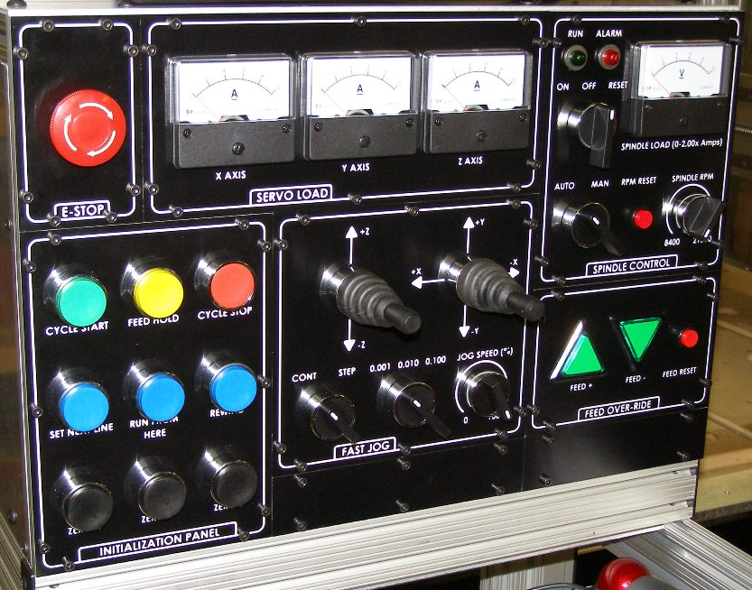
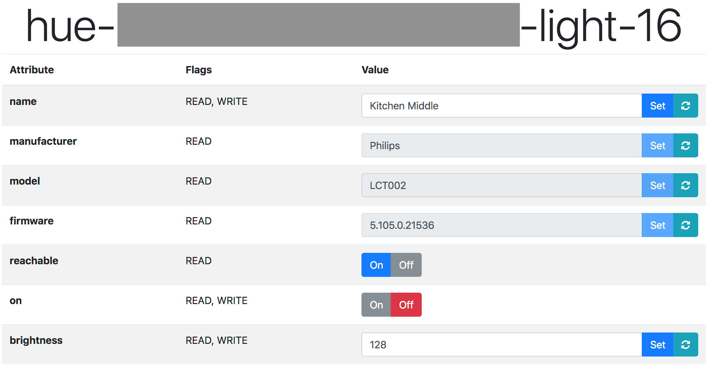
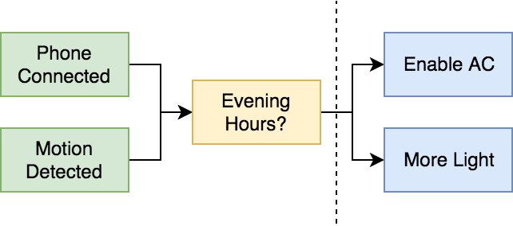
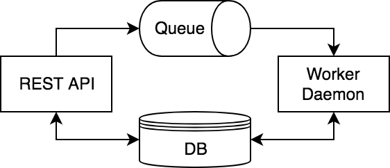

Writing Distributed Software
(with Python)
Alexandru Barbur
Topics
Distributed Software
- Serialization
- Component API(s)
- Network IO
- Server Architecture
- Network Discovery
Control Systems
- Abstract Models
- Device Design
- Automation
About Me
Control Systems
MDCS
Modular Distributed Control System
Distributed Software
Serialization
- Validation
- Versioning
- Binary Data
- Bandwidth
- Performance
Serialization: Standards

Serialization: Standards
A small selection of existing standards:
- XML (w/ DTD)
- JSON (w/ JSON Schema)
- BSON (MongoDB Binary JSON)
- YAML
- TOML
- MsgPack
- Apache Avro
- Google ProtoBuf
Ex: Avro Schema
{
'type': 'array',
'items': {
'name': 'cpu_core_usage',
'type': 'record',
'fields': [
{'name': 'user', 'type': 'float'},
{'name': 'system', 'type': 'float'},
{'name': 'idle', 'type': 'float'}
]
}
}
Ex: Avro Binary Encoding
from io import BytesIO
import avro.schema.Parse
from avro.io import DatumWriter
from avro.datafile import DataFileWriter
def serialize_value(schema, value):
buffer = BytesIO()
writer = DataFileWriter(buffer, DatumWriter(), schema)
writer.append(value)
writer.flush()
return buffer.getvalue()
schema = avro.schema.Parse({'type': 'string'})
data = serialize_value(schema, "Hello, World!")
Ex: Avro Binary Decoding
from io import BytesIO
import avro.schema.Parse
from avro.io import DatumReader
from avro.datafile import DataFileReader
def unserialize_value(schema, data):
buffer = BytesIO(data)
reader = DataFileReader(buffer, DatumReader())
value = next(reader, None)
reader.close()
return value
schema = avro.schema.Parse({'type': 'string'})
data = unserialize_value(schema, bytes([0x00, ...]))
Component API(s)
- Client Support
- Data Flows
- Performance
- Documentation
Ex: MDCS Node API(s)
-
HTTP API:
- Inspect node and device settings.
- Inspect device attributes and actions.
-
TCP API:
- Read, write device attributes.
- Run device actions.
-
Multicast API:
- Network discovery.
- Device events.
Network IO
- Native sockets.
-
Broker-less:
- ZeroMQ (http://zeromq.org/)
- NanoMsg (https://nanomsg.github.io/nng/)
-
Broker:
- MQTT (http://mqtt.org/)
- RabbitMQ (https://www.rabbitmq.com/)
Ex: Socket IO
import socket
from io import BytesIO
from avro.ipc import Transceiver, FramedReader, FramedWriter
class TCPTransceiver(Transceiver):
def __init__(self, host, port):
self.socket = socket.socket(
socket.AF_INET,
socket.SOCK_STREAM)
self.socket.connect((host, port))
self.rfile = self.socket.makefile('rb', -1)
def ReadMessage(self):
reader = FramedReader(self.rfile)
message = reader.Read()
return message
def WriteMessage(self, message):
send_buffer = BytesIO()
writer = FramedWriter(send_buffer)
writer.Write(message)
self.socket.send(send_buffer.getvalue())
def Close(self):
self.rfile.close()
self.socket.close()
Server Architecture
-
Threaded:
- One thread per server socket.
- One thread per client socket.
- (Python 2/3) SocketServer
-
Asynchronous:
- One event loop across multiple APIs.
- Single or multi-threaded.
- (Python 3+) asyncio, aiohttp
Ex: SocketServer Server
from socketserver import TCPServer
from avro.ipc import FramedReader, FramedWriter
class NodeTCPServer(TCPServer):
def __init__(self, ...):
super().__init__(
(tcp_host, tcp_port), NodeTCPRequestHandler,
bind_and_activate=False)
self.allow_reuse_address = True
def run(self):
try:
self.server_bind()
self.server_activate()
self.serve_forever()
finally:
self.server_close()
Ex: SocketServer Handler
from avro.ipc import FramedReader, FramedWriter
from socketserver import StreamRequestHandler
class NodeTCPRequestHandler(StreamRequestHandler):
def handle(self):
reader = FramedReader(self.rfile)
request_data = reader.Read()
responder = NodeResponder(...)
response_data = responder.Respond(request_data)
writer = FramedWriter(self.wfile)
writer.Write(response_data)
Network Discovery
- Broadcast
- Multicast
-
mDNS:
- Avahi (Linux)
- Bonjour (OS X)
-
External Services:
- Consul
- Zookeeper
Ex: Multicast SocketServer
import struct, socket
from socketserver import UDPServer
class MulticastServer(UDPServer):
def __init__(self, ...):
super().__init__(
('0.0.0.0', 5512),
request_handler,
bind_and_activate=False)
self.allow_reuse_address = True
self._group_member = struct.pack('4sL',
socket.inet_aton('224.0.0.128'),
socket.INADDR_ANY)
def run(self):
# omitted: bind and activate server
try:
self.socket.setsockopt(
socket.IPPROTO_IP, socket.IP_ADD_MEMBERSHIP,
self._group_member)
self.serve_forever()
finally:
self.socket.setsockopt(
socket.IPPROTO_IP, socket.IP_DROP_MEMBERSHIP,
self._group_member)
self.server_close()
def send_message(self, message):
data = serialize_value(..., message)
self.socket.sendto(data, ('224.0.0.128', 5512))
Control Systems
Abstract Models
MDCS: Devices
- Globally unique identifier.
- Named attributes.
- Named actions.
Ex: Device Design
Ex: MDCS Philips Hue Device
Ex: MDCS Device API
import requests, json
from mdcs.device import Device, AttributeFlags
from mdcs.device import DelegatedAttribute
class LightDevice(Device):
def __init__(self, name, ...):
super().__init__(name, config={...})
self.add_attribute(DelegatedAttribute(
'name',
AttributeFlags.READ | AttributeFlags.WRITE,
'string',
self.read_name,
self.write_name))
def read_name(self):
response = requests.get(self.config['...'])
data = response.json()
return data['name']
Automation
MDCS: Reactor
Ex: More Light Script
lights = registry:get_devices("*light*")
for name, light in pairs(lights) do
brightness = light:read("brightness")
brightness = math.min(254, brightness + 32)
light:write("on", true)
light:write("brightness", brightness)
end
Extra Topics
- Access Control
- Recording Attributes
- Hotplugging Devices